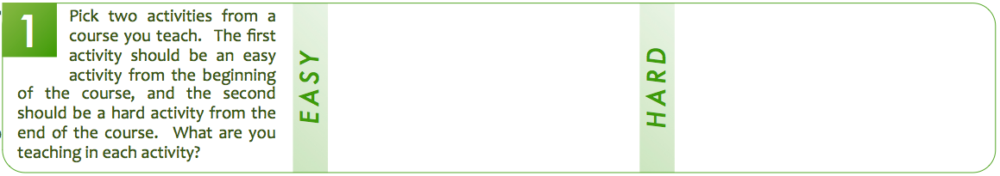
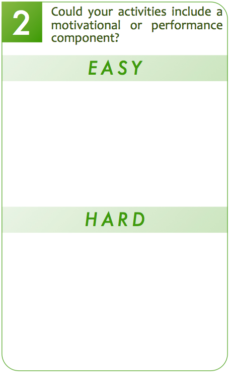
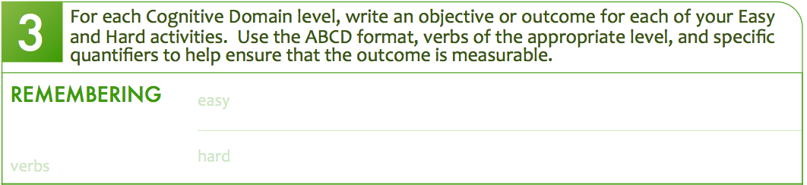

Overview
- Learning Domains
-
Levels of Learning
- Application
- Curriculum
- Student Support
Who am I and what is this?
- My name is Rick Osborne. I am the Program Manager for the Web Design & Development and Mobile Development programs.
- I find its not uncommon to hear:
- Student:
I didn't know you wanted that.
- Teacher:
They just don't get it.
- Manager:
Don't we teach that?
- If we can't communicate with each other, the students don't have any hope of understanding.
Our Goals Today
- Differentiate between:
- The student will
understand
how ...
- The student will
assemble
...
- Get over any fear of objectives & outcomes
- Refactor objectives & outcomes to enhance meaning
What is Bloom's Taxonomy?
- A scaffolding framework for classifying learning objectives.
- Originally intended (1950s) to make it easier to:
- Write standardized tests
- Communicate what those tests really assessed
- Only one of many (20+) similar frameworks.
- Still a work in progress.
What is it not?
- Not intended as The One True Solution.
- Not going to solve every instructional design problem.
- Not always cut and dry. There are murky grey areas.
Section 1: Two Examples
- Find section 1 on your handout.

- Fill in two activities/lectures from a course.
- The Easy activity should be one that your students never have trouble with. (Maybe from Day 1?)
- The Hard activity should be one that students find tricky to absorb. (Maybe from later?)
- You don't need much detail ... yet.
Vocabulary: Domain
- EducatorSpeak for
area of interest
- Bloom's Taxonomy focuses on learning through interactions
- Similar to Multiple Intelligence Theory, in that is it also a way of thinking about learning & teaching
- M.I. is about presentation & context. Bloom is about assessment and categorization.
- When you hear
learning domain
, translate in your head to:
all of the ways to learn that are related to one method of interacting
Learning Domains
- What are you trying to influence?
Knowledge
Attitude
Let's look at some examples
- These examples use action verbs as goals for student achievement. You can find these and more at:
- Or search for
bloom taxonomy learning
.
Attitude: Affective Domain
- Feelings
- Values
- Appreciation
- Enthusiasm
- Motivation
The learner will confront and overcome their fear of the Flash Professional timeline interface.
Affective Domain Levels
receiving
responding
valuing
organizing
internalizing
Affective Domain Levels
receiving
responding
valuing
organizing
internalizing
receiving
The learner will watch 3 videos generated by other students.
ask describe hold identify locate name reply use
responding
The learner will present their project to the class.
answer assist help perform practice report tell write
valuing
The learner will propose a solution using both H5C3 & Flash.
demonstrate differentiate invite join justify study work
organizing
The learner will lead a team to research alternative solutions.
alter arrange combine defend formulate integrate relate
internalizing
The learner will adapt to and incorporate new technologies.
act influence perform practice question revise serve solve
Section 2: Affective Activities

- Find handout section 2.
- Give ideas that would support and enhance your Easy & Hard activities to include:
- Motivation
- A sense of value
- Personal connection
Physical Abilities: Psychomotor Domain
- Movement
- Coordination
- Motor Skills
The learner will develop sufficient hand-eye coordination to reach 100+ actions per minute in Starcraft II.
Psychomotor Domain Levels
perceiving
mechanism
adapting
originating
Knowledge: Cognitive Domain
- Technical know-how
- Facts
- Procedures
- Concepts
Given a design comp, the learner will be able to create image slices of the appropriate file type, compression, and size.
Mission, Goal, Objective, Outcome
- Least to most specific progression of learning
- Missions & Goals are not measurable
- Objectives & Outcomes must be measurable
- ... but unfortunately everyone seems to define them in different (and contradictory) terms
Vocab: Objectives & Outcomes
- Outcomes
- are the knowledge, skills, and attitudes that students will possess at the end of a learning experience.
- describe how students will be changed as a result of their learning experience.
- Objectives
- describe the detailed aspects of an outcome and explain how a student will achieve that outcome.
- provide an additional level of specificity by defining the measurable tasks and actions that illustrate learning.
Program
Outcome
Objective
Objective
Objective
Program
Outcome
Objective
Objective
Objective
Course
Outcome
Objective
Objective
Objective
Program
Outcome
Objective
Objective
Objective
Course
Outcome
Objective
Objective
Objective
Unit
Outcome
Objective
Objective
Objective
Ex. Program Outcome & Objectives
Students completing the Example Film Program will be able to mix sound for film and digital media using standard recording and postproduction technologies.
Students will be able to select the appropriate microphone to record dialogue on a sound stage, in a studio, and on location.
Students will be able to create technically competent audio mixes for digital media.
Writing Objectives: ABCD
- Audience:
The learner will be able to
- Behavior:
discover the safest way to cross
- Condition:
a busy intersection of 2 roads
- Degree:
in under 1 minute.
Section 3: Cognitive Activities

- Find section 3 on the back of your handout.
- Write in verbs on the left that apply to this level.
- Create an ABCD-format objective/outcome at this level for both the Easy (above) and Hard (below) activities.
Cognitive Domain Levels
remembering
understanding
applying
analyzing
evaluating
creating
Cognitive Domain Levels
remembering
understanding
applying
analyzing
evaluating
creating
remembering
The learner will be able to recite the 7-layer OSI Model.
define describe identify know list recognize select state
understanding
The learner will be able to explain how to use View States in Flex.
convert distinguish estimate generalize interpret translate
applying
The learner will be able to use a motion tween to bounce an object.
change demonstrate modify prepare show solve use
analyzing
The learner will be able to debug jQuery AJAX calls using Firebug.
diagram deconstruct illustrate outline relate separate
evaluating
The learner will be able to defend their design pattern choices.
appraise compare conclude critique justify relate support
creating
The learner will be able to design and build a multi-subnet firewall.
combine compile create design generate reorganize revise
Activity Support
- Are you helping the student with their homework, or are you helping the student learn?
I can't get my query to run.
What's your query?
remembering
What does the error mean?
analysis
What happens when you take out the parts that don't work?
evaluation & synthesis
Full Sail is hands-on
- Remembering and understanding aren't job skills.
- Tool application is nice, but what happens when the tool changes?
- Through analysis the student sees both the forest and the trees.
- Evaluation of multiple processes allows choice.
- Synthesis of multiple processes shows mastery.
What about different learner types?
- There's a CE for that:
- Curriculum Variation for Multiple Intelligences
- Bloom’s Taxonomy is concerned with analyzing and designing instruction.
- What do the students need to learn?
- Multiple Intelligence Theory is about the development and implementation of instruction.
- How can the material be presented?
How can I build out these activities?
- There are CE sessions for that:
- Instruction and Motivation Design Basics
- Faculty Development Open Hour
- There are a number of instructional systems design frameworks that can help you turn your ideas into reality.
- ADDIE: Analyze, Design, Develop, Implement, Evaluate
- IDLS: Analyze, Measure, Develop, Validate
Review
- Learning isn’t just about cognitive skills, but also attitudes and physical skills.
- Learning only starts at knowledge.
- Confusion comes from misaligned objectives and expectations.
- Student activities should encourage combining multiple elements to create something unique.
Contact
- Rick Osborne
- Program Manager, Web Design & Development
- rosborne at fullsail.com